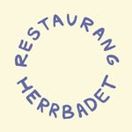
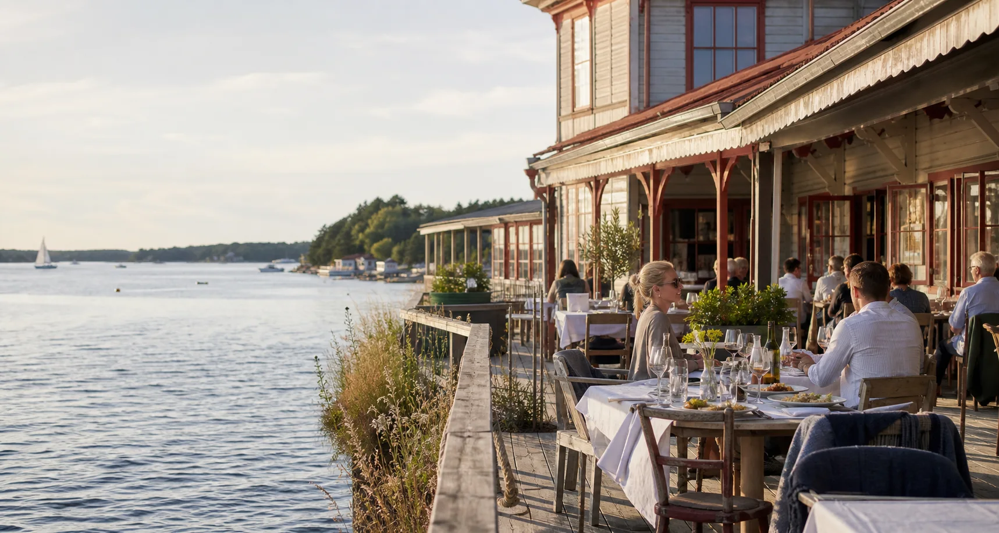
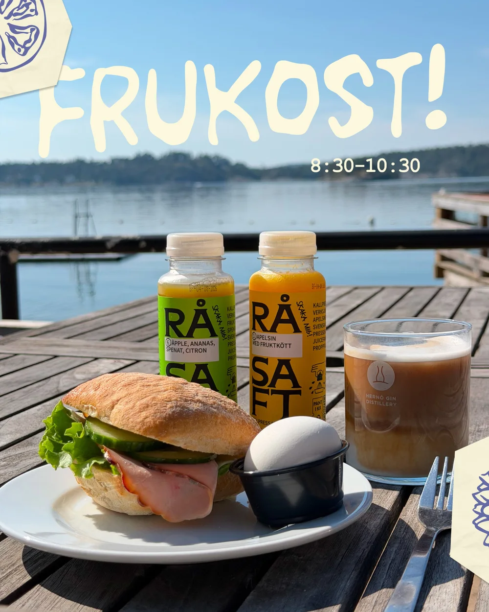
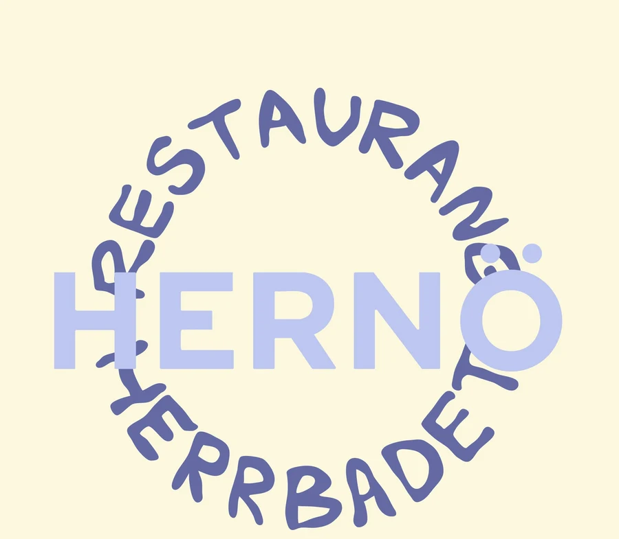
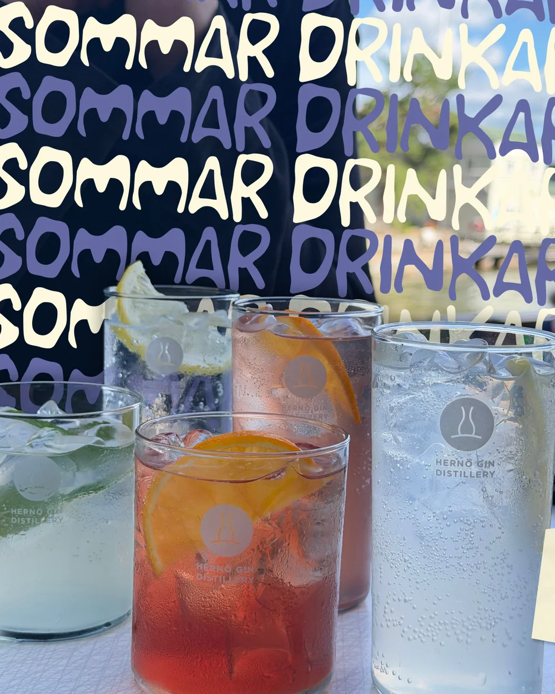
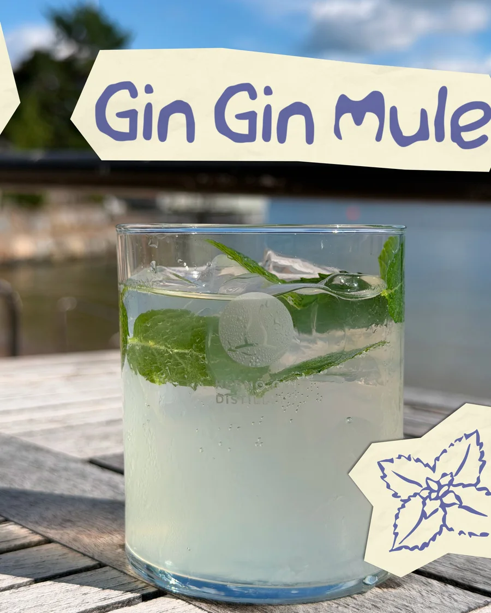
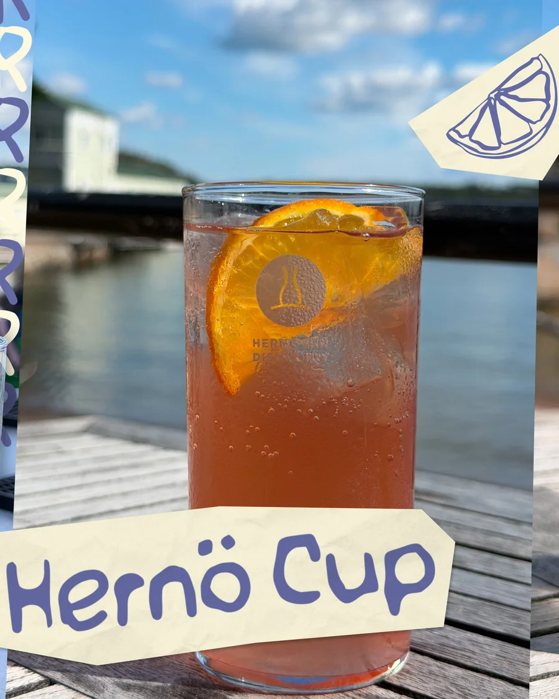

Förmiddag
Frukost, kaffe och en lugn start nära havet.

Saltsjöbaden, precis vid vattnet
Frukost efter morgondoppet, lunch i solen, fika på bryggan och långa kvällar med något gott i glaset.

Illustrativ demobildEn bit av Saltis
På Restaurang Herrbadet möts badliv, mat och musik i en av Saltsjöbadens mest särpräglade miljöer. Här får dagen gärna börja långsamt och kvällen fortsätta lite längre.
Slå dig ner efter ett dopp, ta med vännerna på lunch eller samla hela sällskapet för en sommarkväll vid vattnet.

Från första kaffet till sista glaset
Herrbadet serverar frukost, lunch och fika under badets öppettider. På utvalda torsdagar och helger fortsätter dagen med AW och middag.
Frukost, kaffe och en lugn start nära havet.
Lunch, fika och enkla smaker för soliga dagar.
AW, middag och utvalda evenemang.

Hernö på Herrbadet
Fem svalkande signaturdrinkar med Hernö Gin – serverade med utsikt över vattnet.



Det händer på Herrbadet
Sommarens program lever från vecka till vecka. Följ restaurangens Instagram för aktuella öppettider, menyer, AW-kvällar och evenemang.
Följ @restaurang_herrbadetFira vid vattnet
Student, födelsedag, jubileum eller middag med hela gänget? Berätta vad ni planerar, så tar vi dialogen därifrån.
Skicka bokningsförfråganRestaurang Herrbadet ligger vid klassiska Saltisbadet – nära havet, bryggorna och Saltsjöbadens sommarliv. En naturlig mötesplats för dig som söker lunch, fika eller en avslappnad kväll i en unik skärgårdsmiljö.
Här går det enkelt att kombinera bad och promenad med något gott att äta. Utbud och öppettider följer säsongen, medan utvalda kvällar fylls av AW, middag, musik och lokala möten.
Välkommen ner till vattnet
Torben Gruts väg 8
133 35 Saltsjöbaden
Säsongsöppet. Följ Instagram för dagens tider och program.